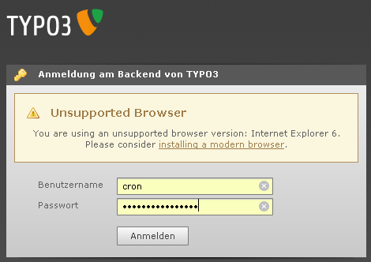

Feature #20953
Add a warning for IE6 users in TYPO3 4.6
| Status: | Closed | Start date: | 2011-07-18 | |
|---|---|---|---|---|
| Priority: | Should have | Due date: | 2011-07-18 | |
| Assigned To: | Steffen Gebert | % Done: | 100% |
|
| Category: | - | Spent time: | - | |
| Target version: | - | |||
| PHP Version: | 5.3 | Sprint Focus: | ||
| Complexity: |
Description
As we hopefully drop support for IE6 in 4.6, I'd add a warning at the login screen that the browser is outdated and is no longer supported.
(issue imported from #M11822)
11822.diff
 (2.3 kB)
(2.3 kB)
typo3-login-unsupported-browser.png (19.9 kB)
{kind=link}
Related issues
Associated revisions
[FEATURE] Add warning for IE 6 users
As IE6 is not supported anymore, add a warning that the user should
upgrade its browser.
Change-Id: Id7d8411ae38e55dd6fa2747dce2fb85522c7bbc7
Resolves: #20953
[FEATURE] Add warning for IE6 users
As IE6 is not supported anymore, add a warning that the user should
upgrade his browser.
Change-Id: Id7d8411ae38e55dd6fa2747dce2fb85522c7bbc7
Resolves: #20953
Reviewed-on: http://review.typo3.org/3381
Reviewed-by: Stefan Neufeind
Tested-by: Eric Chavaillaz
Reviewed-by: Xavier Perseguers
Tested-by: Xavier Perseguers
History
#1 Updated by Benjamin Mack about 5 years ago
TYPO3 4.4 will support IE6 just as IE7 ...., so let's think about this in 4.5 again (once Windows 2000 support has expired)
#2 Updated by Steffen Gebert about 5 years ago
...and WinXP, which shipps IE6 by default ;-)
#3 Updated by Steffen Gebert almost 5 years ago
I think we can target this for 4.6 and tell them that their browser isn't supported anymore ;-)
#4 Updated by Benjamin Mack almost 5 years ago
yes, I agree.
#5 Updated by Xavier Perseguers over 4 years ago
The message should be changed from:
Your browser is outdated and might not be supported in future versions of TYPO3.
to something like
Your browser is outdated and might not be supported by TYPO3.
#6 Updated by Steffen Gebert over 4 years ago
Really? We do support IE6 ;-)
After branching 4.5, we can add this and write "*is* not supported" :)
#7 Updated by Xavier Perseguers over 4 years ago
Now the question is, should we deprecate IE7 as well? Having IE8 + IE9 seems already enough, isn't it?
#8 Updated by Jigal van Hemert over 4 years ago
Suggestion: MS has a banner to warn for use of IE6:
http://www.ie6countdown.com/join-us.html
instead of the URL in that banner a link to:
http://www.browserchoice.eu/
could be used. This is the browser select screen used in Windows and provides direct links to installers.
Okay, we could use our own banner, but it's the idea here :-)
#9 Updated by Xavier Perseguers about 4 years ago
- Target version changed from 1081 to 1238
#10 Updated by Mr. Hudson about 4 years ago
Patch set 1 of change I7c30105e8b69368c2f16c95ea38e7db0bd6dfe7b has been pushed to the review server.
It is available at http://review.typo3.org/2182
#11 Updated by Mr. Hudson about 4 years ago
Patch set 2 of change I7c30105e8b69368c2f16c95ea38e7db0bd6dfe7b has been pushed to the review server.
It is available at http://review.typo3.org/2182
#12 Updated by Jigal van Hemert about 4 years ago
Why don't we use our own banner with the message (I agree with Steffen in Gerrit on this) that the BE will not work with IE6?
Why not link to the browser choice site which offers installers for various browsers (and not only IE)?
#13 Updated by Xavier Perseguers about 4 years ago
Jigal van Hemert wrote:
Why don't we use our own banner with the message (I agree with Steffen in Gerrit on this) that the BE will not work with IE6?
Then we should get in touch with the design/UX team. And what about multilingual banner? Do we want this banner to be "translated" in our 35+ supported languages? I fear this tiny patch could become a huge dumb code and list of files included...
Why not link to the browser choice site which offers installers for various browsers (and not only IE)?
Well, from my POV that would be trying to move them out of Internet Explorer. I'm not against it but the point is to let them run a recent version of their browser. Perhaps they already have Firefox but prefer using IE, perhaps not but the point is that they should not use IE6 anymore. Furthermore, we should then detect old version of the corresponding other browsers too as they may have deactivated auto-update. Again, it's a +/-0.
#14 Updated by Xavier Perseguers about 4 years ago
- Status changed from New to Under Review
#15 Updated by Xavier Perseguers about 4 years ago
- Status changed from Under Review to Accepted
#16 Updated by Ernesto Baschny about 4 years ago
- File typo3-login-unsupported-browser.png added
Sorry, I've missed the discussion here, I went straight to gerrit (as requested by Xavier in the list...).
So here again: I wouldn't use a banner at all, but instead just spit out an error message (text-based) just like the missing cookie support. No fancy "banner" needed, in my opinion.
As an example, here is what would be very easy to implement:

This can also be used for alerting about other not-supported browsers, BTW, not only Internet Explorer 6.
#17 Updated by Oliver Hader about 4 years ago
- Target version changed from 1238 to 1281
#18 Updated by Steffen Gebert about 4 years ago
- Status changed from Accepted to Resolved
- % Done changed from 0 to 100
Applied in changeset commit:6a82730cef680a698214a5b840df630f2ce3d250.
#19 Updated by Steffen Gebert about 4 years ago
- Status changed from Resolved to New
- Target version changed from 1281 to 4.6.0-beta1
- TYPO3 Version changed from 4.3 to 4.6
This one is not closed, yet. I just pushed it to a sandbox.
#20 Updated by Mr. Hudson about 4 years ago
Patch set 3 of change Id7d8411ae38e55dd6fa2747dce2fb85522c7bbc7 has been pushed to the review server.
It is available at http://review.typo3.org/3381
#21 Updated by Xavier Perseguers about 4 years ago
- Status changed from New to Resolved
- Assigned To set to Steffen Gebert
- PHP Version changed from 4.3 to 5.3
Change has been successfully cherry-picked as 3fe5177392c4fb7a7b5f5d39ac653454501f94ea.
#22 Updated by Xavier Perseguers over 3 years ago
- Status changed from Resolved to Closed
#23 Updated by Ernesto Baschny about 2 years ago
- Target version deleted (
4.6.0-beta1)